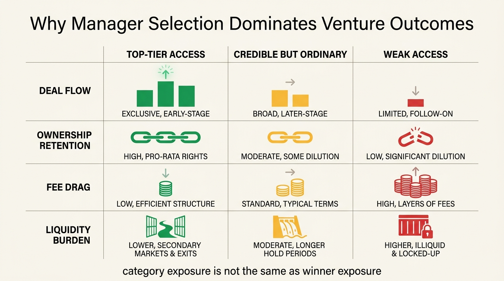

The Venture Capital Power Law Reality
Venture capital keeps attracting household imagination because the upside is real. A small number of startups can compound into extraordinary outcomes. The mistake is to convert that truth into a normal portfolio assumption. Venture returns are not broadly distributed. They follow a power law, which means a thin tail of outliers drives most of the economic payoff while a large base of deals and funds produces mediocre or negative results.
That structure changes almost everything about how the asset class should be read. In public markets, a diversified investor can usually expect broad market capture if fees and behavior are controlled. In venture, average access can be structurally insufficient because the average fund may never see, win, or hold the handful of companies that matter. The household question is therefore not whether venture can create wealth. It is whether the investor has access, selection discipline, liquidity tolerance, and time horizon strong enough to survive the dispersion.
Core thesis: venture capital is governed by power-law concentration, so a small minority of companies and managers generate most of the asset class return. The established fact is that venture outcomes are highly skewed. The practical inference is that households should treat venture as a selective, capacity-constrained sleeve rather than as a routine diversification upgrade.

What Power Law Means In Practice
A power law is stronger than ordinary skew. It means the distribution is so concentrated that the largest outcomes dominate the total. In venture, this appears twice. First, a small number of startups create a disproportionate share of portfolio value. Second, a small number of managers capture a disproportionate share of the best startup access and the resulting fund-level economics.
That double concentration is why the casual argument for venture is usually weak. The pitch often sounds like this: innovation is powerful, private companies stay private longer, therefore every sophisticated portfolio should own more venture exposure. The missing step is that exposure to the category is not the same as exposure to the outliers that define it. Access to a median or high-fee manager can leave the investor with long lockups, opaque marks, and ordinary results.
This is one reason the topic belongs beside The Private Markets Mirage and The Illiquidity Premium Myth. Lockup alone does not create return. A constrained asset class only compensates the investor if the manager can convert that constraint into superior selection and favorable ownership of the rare winners.
Why Fund Selection Matters More Here Than In Most Asset Classes
In index investing, fee control and broad exposure can do most of the work. In venture, manager dispersion matters far more because the underlying opportunity set is not evenly accessible. The best founders have choice, rounds are rationed, and reputation compounds. That gives strong managers better entry into the part of the market where the outliers are more likely to concentrate.
Households often underestimate what this means. They hear that venture as an asset class produced a few legendary outcomes and assume a feeder fund, angel syndicate, or high-minimum private vehicle offers a diluted version of the same machine. Sometimes it does. Often it offers a very different slice of the market, one with weaker sourcing, weaker governance, weaker follow-on capacity, and less claim on the eventual winners.
Selection risk is therefore not a side issue. It is the issue. In an asset class with extreme return concentration, modest slippage in manager quality can erase most of the reason for being there.

The Household-Level Frictions
Even when the manager is credible, the household still faces structural frictions. Capital can be called over time rather than deployed immediately. Liquidity disappears for years. Interim marks may be stale or manager-influenced. Tax treatment can be complex. Follow-on rounds can dilute early ownership. Fees and carry reduce net capture. The investor can therefore be directionally right about innovation and still earn a disappointing personal result.
This matters because many households come to venture from public-market frustration. They want higher upside, earlier access, or insulation from index crowding. Those motives are understandable. They do not remove the need to ask whether the household can absorb illiquidity, tolerate uncertainty, and accept that even a reasonable fund may need one or two exceptional companies to justify the whole sleeve.
Venture can therefore function well only when the rest of the balance sheet is already stable. A household with thin liquidity, concentration in employer equity, or large near-term obligations should be especially cautious. The power-law upside does not help if the investor is forced to need cash before the tail has a chance to arrive.
When Venture Can Make Sense
- Access is genuinely differentiated. The investor has a path to managers with consistent sourcing quality and meaningful ownership of strong rounds.
- The sleeve is sized as risk capital. The household does not need liquidity from the allocation and can tolerate long duration.
- The rest of the portfolio already does the core job. Public equities, cash reserves, tax planning, and liability management are not being neglected to fund the venture story.
- The investor understands net capture. Fees, carry, dilution, and pacing are modeled honestly rather than hand-waved by headline gross returns.
- The thesis is portfolio construction, not status consumption. Venture access should solve a real capital-allocation problem, not merely signal sophistication.
Known, Inferred, And Unknown
| Category | Assessment |
|---|---|
| Known | Venture outcomes are highly skewed, with a small number of companies generating a disproportionate share of total value creation. |
| Known | Fund-level return dispersion in venture is materially wider than in broad public-market index exposure, which makes manager selection unusually important. |
| Known | Illiquidity, fees, stale marks, and dilution can materially reduce the household investor's net capture from headline venture upside. |
| Inferred | Many affluent households buy venture exposure because they want access to the innovation narrative even when their actual manager access is not good enough to justify the sleeve. |
| Inferred | For most households, venture works best as a bounded opportunistic allocation after public-market, liquidity, and liability systems are already sound. |
| Unknown | How the current private-market environment will affect the next decade of venture dispersion, especially after valuation resets and more selective exit windows. |
The WealthMeter Reading
The practical lesson is to stop treating venture as a general superiority asset. It is a specialized, access-sensitive, patience-intensive sleeve whose upside depends on surviving an extreme distribution. That can be worthwhile. It is not automatically wise. A household should earn the right to make the allocation by first building liquid resilience and by understanding whether its actual access sits anywhere near the part of the market where the power law pays.
In most cases, the decision should be framed against opportunity cost. If the same capital could reduce household fragility, exploit taxable-market dislocations, fund geographic flexibility, or lower concentrated employer risk, venture has to clear a high bar. The fact that a few venture portfolios created fortunes does not mean your portfolio is structurally positioned to do the same.
Source List
Mulcahy D, Weeks B, Bradley HS. We Have Met the Enemy... and He Is Us. Kauffman Foundation. 2012.
Gompers P, Kovner A, Lerner J, Scharfstein D. Performance Persistence in Entrepreneurship and Venture Capital. Journal of Financial Economics. 2010.
Foundational literature on venture return dispersion, power-law outcome concentration, persistence, and private-market fee drag.
Supporting WealthMeter context on private-market illusions, illiquidity claims, and concentration risk.